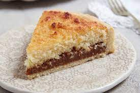

Recetas
Torta de Coco
Ingredientes (masa)
- Harina 0000 250gr
- Manteca pomada 125gr
- Azúcar impalpable 50gr
- 2 huevos
- Leche 20gr
- Sal 1 cdta
Ingredientes (relleno)
Ingredientes (superficie)
- Coco rallado 200gr
- Azúcar 150gr
- Crema de leche 150gr
- 2 huevos
- Ralladura de 1/2 limón.

Preparación
- Batir la manteca pomada junto al azúcar impalpable hasta que aclare y quede cremosa.
- Incorporar los huevos de a uno y batir.
- Verter la leche y mezclar.
- Agregar la harina mezclada junto a la sal y unir sin amasar hasta formar una masa homogénea.
- Envolver en papel film y refrigerar 30 minutos.
- Estirar la masa entre 2 papel film para que resulte más fácil colocarla en el molde.
- Retirar el film de uno de los lados y colocar la masa en un molde enmantecado.
- Retirar el film restante y con los dedos enharinados emparejar la superficie.
- Realizar una pre-cocción en horno a 180ºC durante 12 minutos.
- Retirar del horno y cubrir con el dulce de leche.
- Mezclar en un bowl todos los ingredientes de la cubierta y distribuir en forma pareja sobre la superficie.
- Cocinar en horno a 180ºC durante 25 minutos o hasta que se haya dorado la superficie.